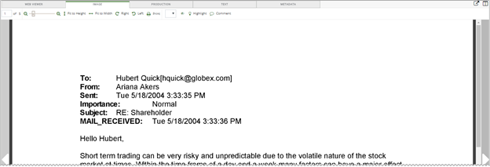
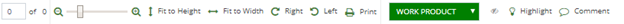
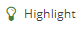
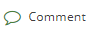

Note: If necessary, enlarge the Document View window to view the entire toolbar.
Document image files include TIFF, TIF, JPG, JPEG, PNG, or PDF files created from native document files. The document’s image appears if

|
|
Note: If necessary, enlarge the Document View window to view the entire toolbar. |

 displays the current page and total number of pages in the document. To move to a specific page in the document, enter the page number in the box. Use the arrows located on either side of the image to move to the previous page or the next page.
displays the current page and total number of pages in the document. To move to a specific page in the document, enter the page number in the box. Use the arrows located on either side of the image to move to the previous page or the next page.
Use the zoom slider  to increase or decrease the document size. Position the mouse pointer over the slider to view the current percentage size. The mouse scroll wheel can also be used to adjust the document size.
to increase or decrease the document size. Position the mouse pointer over the slider to view the current percentage size. The mouse scroll wheel can also be used to adjust the document size.
Click  to fit image to the width or height of the view window. Also resets the zoom percentage back to the default settings for the width or the height.
to fit image to the width or height of the view window. Also resets the zoom percentage back to the default settings for the width or the height.
To rotate the image in 90 degree increments, either right or left, click  .
.
From the Redaction drop-down , select a pre-defined redaction category. Point, click, and drag over the desired text in the image to be redacted and release the mouse button. To move an existing redaction to a different location in the image, mouse over the redaction and when the pointer turns to a four-headed arrow, click and drag the redaction to the new location. Each redaction has the same font and background color as it appears in the drop-down list.
|
|
Note: The selected redaction settings persist when navigating to next or previous documents and pages. |
To delete the redaction, click  located in the upper right corner of the redaction.
located in the upper right corner of the redaction.

The following example shows redacted text that matches the redaction category shown in the previous figure.

To show/hide the redactions in the image, click . By default the redactions are hidden. To hide the redactions, again, click
. By default the redactions are hidden. To hide the redactions, again, click  .
.
Click

to activate the highlighting function. Point, click, and drag over the desired area in the image to add a highlight. Repeat to add additional highlights. To move the existing highlight to a different location in the image, mouse over the highlight and when the pointer turns to a four-headed arrow, click and drag the highlight to the new location.To delete the highlight, click located in the upper right corner of the highlight.
To add a comment on the image, click

, point, click, and drag on the desired area in the image to display the comment box. Enter a comment and click OK. Repeat to add additional comments. To move an existing comment to a different location in the image, mouse over the comment and when the pointer turns to a four-headed arrow, click and drag the comment to the new location.To delete the comment, click located in the upper right corner of the comment.